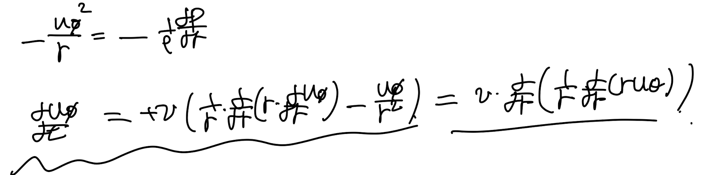
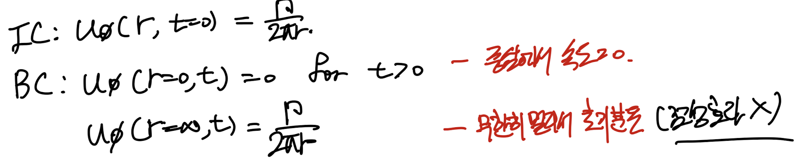
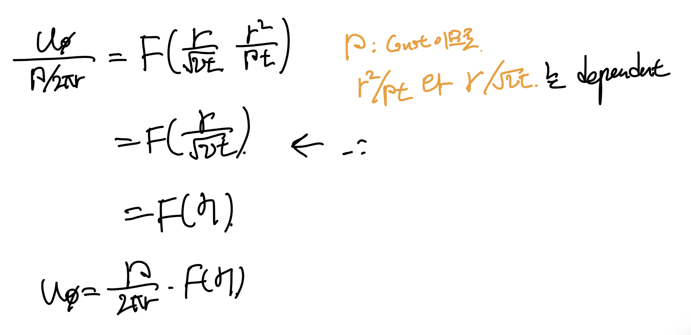
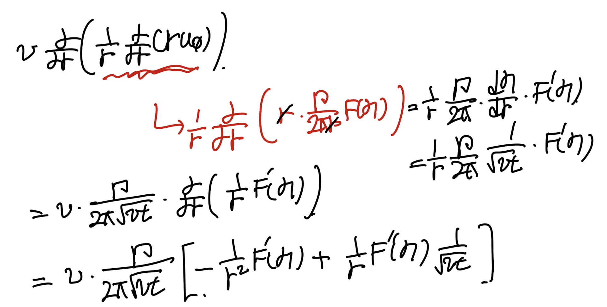
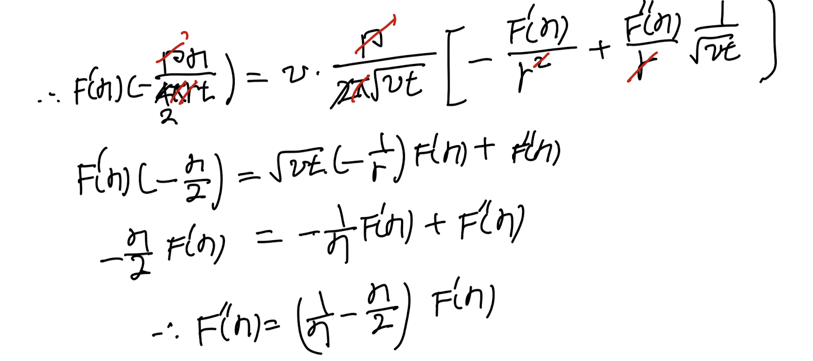
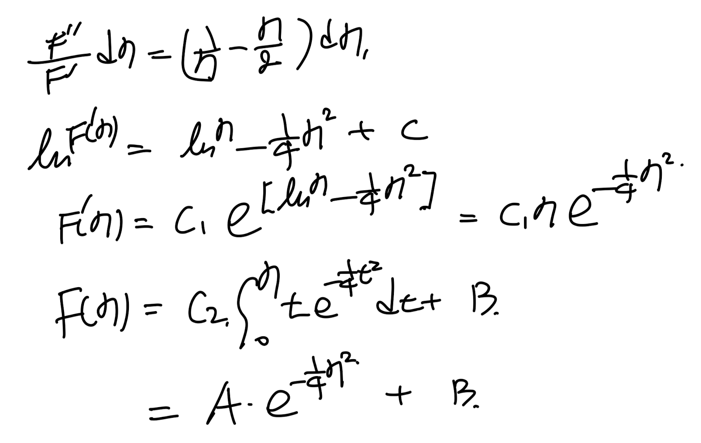
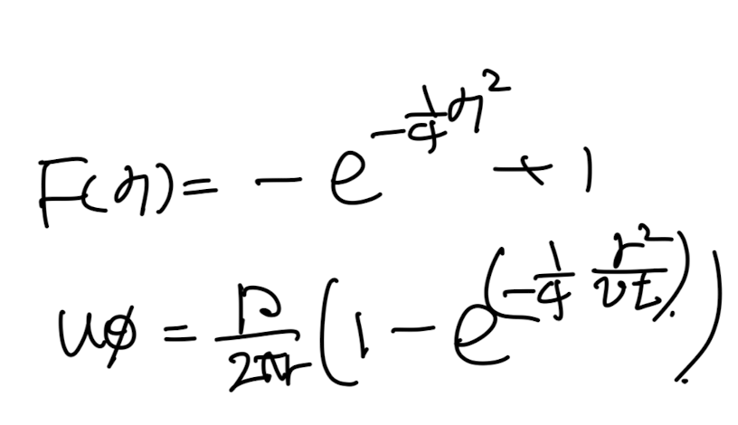
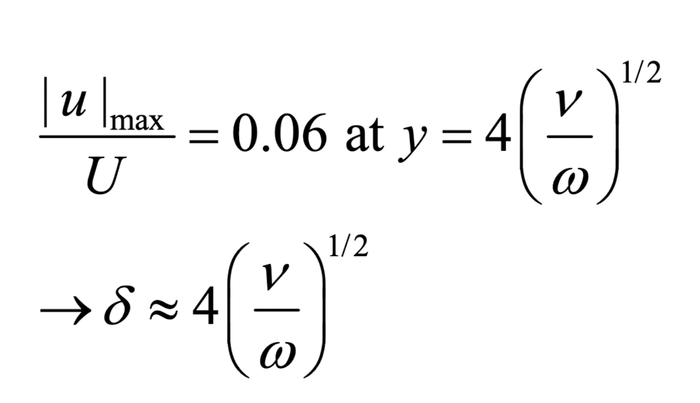

Ch4 Laminar flow - Oseen-Lamb Vortex, Stoke's 2nd Theorem
지난 시간에
PDE->ODE로
무차원수를 이용하여 만든 후
Similarity solution을
유도하였다.
이번 시간에도 같은 방식으로
Irrotational Vortex의 속도장 해를 구해보자.

Painting w/ a Irrotational vortex
[Aussumptions]

먼저 연속방정식으로 u_r = 0

그 다음, 모멘텀 보존 방정식에 가정을 적용해주면,
다음 두 식이 유도된다.

여기에 Initial conditon과
boundary condition을 적용해주자.
(무한히 멀리서의 속도는 점성효과가 없다는 것)

똑같이 이전의 similarity solution을 구하는 방식대로,
무차원수 3개로 식 구성 가능.

같은 방식으로 함수안의 두개의 무차원수는
독립적이지 않으므로, 한개. 제거 가능
그중에서 점성항을 포함한 무차원수를 남겨주자.

이후, η를 이용하여 무차원수를 치환해주자.
이제 무차원수로 변환한 속도장을
다음의 모멘텀 방정식에 대입해주자.

대입전에, 무차원수와
미분항을 정리두자. (이후 계산을 위해서)

먼저 du/dt 좌항은 다음과 같이 정리된다

그리고 우항에 대입후 정리하면 다음과 같다.

좌항 = 우항
으로 식을 정리하면 귀신같이
ODE가 나온다.

ODE는 다음과 같이 쉽게 적분으로 해결된다.

이후, Initial conditon
Boundary condition
적용을 통해서,
계수들을 쉽게 유도가능하다.


따라서, 최종적으로 속도장은
다음과 같다.

이번에는 스톡스의 두번째 이론을 풀어보자.
첫번째에서는 plate가 일정한 속도 U로
x방향으로 움직이는 상황이었고,
이번에는 진동하는 상황을 가정해보자.

- Unsteady 2D flow
- incompressible
모멘텀 보존식으로 다음과 같이 정리 가능하다.

plate가 움직이는 주기 그대로,
속도장도 같은 주기로 움직일 것이기 때문에,
다음과 같이 속도항을 가정하고,
위 식에 대입해보자.

간단한 mass-spring 2nd order ODE가 나오게 되므로 쉽게
k를 구할 수 있다.
위 ODE의 일반해는 다음과 같다는 것은
공학수학 ODE시간에 가장먼저 배웠었다.

Boundary conditon으로
계수들을 다음과 같이 구할 수 있다.

따라서, f(y)는 최종적으로
계수를 대입하면 구할 수 있고
실수부분만 추출하여 최종 속도장을 구할 수 있다.

wt는 주기적으로 변하고,
wt가 각각 0, pi/2, 3pi/2 ...
일때마다, 무차원수와 속도무차원수의 관계를
나타낸 그래프는 다음과 같다.

여기서 핵심적인 point 는
umax/U이다.
이 점이 의미하는 바는
plate의 움직임이 판위의 공간어디까지 영향을 주는가
그 마지노선이다.
결론적으로 y = 4root(v/w)까지만
진동하는 판이 점성효과로 속도를 증가시켜,
u_max까지 도달하게 만들고

그 특정한 y를 넘어가는 순간부터는 속도가 다시 줄어들어
판의 영향을 더이상 받지 않게 된다.